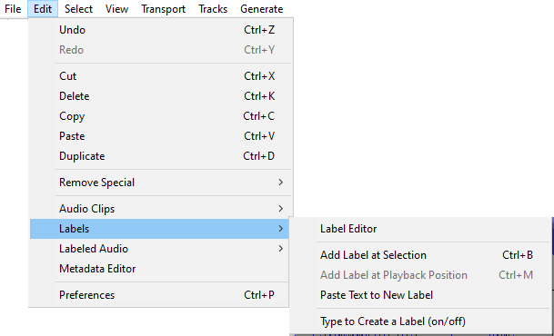

Edit Menu: Labels
- 
Label Editor
This command invokes the Label Editor which lets you add or remove Label Tracks and edit their labels entirely using the keyboard, so is particularly useful for visually impaired users.
It brings up a dialog box showing all of your labels in a keyboard-accessible tabular view. Handy buttons in the dialog let you insert or delete a label, or import and export labels to a file. See Labels Editor for more details.
Add Label at Selection Ctrl + B
This command will place a new label at your current cursor position or selection. See this page for more details.
Creates a new label at the position of the editing cursor or selection region. You can then title the label by typing with the keyboard and hitting "Enter" when you are done. When you click in the label later it will recall the position of the editing cursor or selection at which the label was created. See Label Tracks for more information on how to use label tracks.
Add Label at Playback Position Ctrl + M
This command will place a new label at your current playback or recording position. See this page for more details.
Like Add Label at Selection but the label is added at the current position during playback or recording.
On a Mac the shortcut for this command is (⌘ + .).
Paste Text to New Label Ctrl + Alt + V Extra
Pastes the text on the system clipboard (or text from a label stored in the Audacity clipboard) to a new label at the cursor or region position in the currently selected label track. If there is no selection in the label track a point label is created. If a region is selected in the label track a region label is created. A new label track is created if none exists.
The most recent text cut or copied to either clipboard is pasted. If you have copied or cut a label to the Audacity clipboard, the text of that label will be pasted. If you have cut or copied text to the system clipboard from an application other than Audacity, that text will be pasted.
In the example below, the text "Question 1" was copied from a word processing document then the "Paste Text to New Label" command was executed.


Type to Create a Label (on/off)
When the label track has the colored focus border (the actual color depends on the Theme you choose) as in the image above you can, if preferred, just type to create a label containing that text rather than first using the menu or shortcut to create the label. This default behavior can be turned off, if required, in Tracks Preferences by unchecking the "Type to create label".
- When enabled (default), if there is already a label track that has the colored focus border, you do not need to use "Add Label at Selection" or its Ctrl + B shortcut to create a new label. Just type your required label text to create a new label at the position of the editing cursor or selection region. If the label track does not have focus, use the Up or Down arrow keys on your keyboard to move focus into the label track.
- When this preference is disabled, typing never creates a label in the focused label track. This lets you use shortcuts (for example, transport shortcuts to play audio related to the editing cursor or selection) without accidentally creating an unwanted label. When you want to create a new label, use "Add Label at Selection" or Ctrl + B or "Add Label at Playback Position" Ctrl + M.
- if audio is playing, recording or paused, and the cursor or selection is at the same position in waveform and label track
- if there is already a label at the exact same position in the label track.
You can also create a label at the same position by moving focus to and typing in another label track, as long as there is no label yet at that position, and if audio is playing, as long as the cursor or selection in the waveform is at a different position.